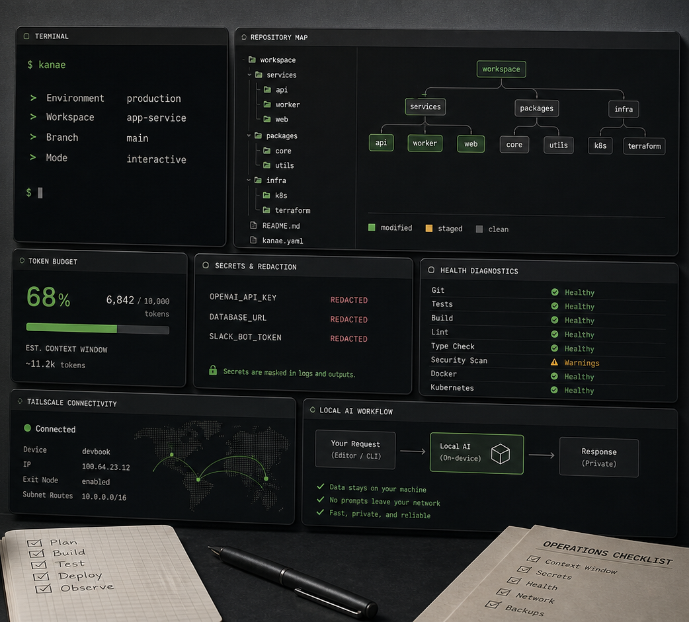

Context Engineering
repo-brief、context-pack、git-context で巨大リポジトリをAI向けの読み筋に圧縮します。
kanae.ai official entry
AI開発の周辺を、CLIから静かに、確実に、前へ。リポジトリ文脈、secretマスク、ローカルAI、Tailscale/WSL診断をひとつの商用Rustスイートにまとめます。

kanae tools はエディタ統合や補完ではありません。Claude Code、Codex、opencode、ローカルLLMに渡す前の材料づくりと、作業環境の健全性確認を担当します。
repo-brief、context-pack、git-context で巨大リポジトリをAI向けの読み筋に圧縮します。
safe-read と shared textmask により、ログやdiffに混ざったtoken、秘密鍵、env値を送信前に伏せます。
pro-doctor、dns-doctor、dev-fleet-status がWSL、Tailscale、Ollama、portを横断診断します。
入れた直後に、AIへ渡す文脈の量と質、環境の詰まりどころ、secret混入リスクを確認できます。
リポジトリから、目的に合う読むべきファイルを抽出。
AIへ送る前に機密っぽい値を自動で伏せる。
ネットワーク、ローカルAI、開発ポートを一括点検。
# 1. AI向けReading Plan
$ repo-brief --task "OAuth2ログインを追加" --budget 20000 --out brief.md
# 2. コンテキスト予算
$ prompt-budget brief.md
12847 tokens
# 3. secretマスク済みの変更文脈
$ changed-context --since HEAD~5 --include-tests
# 4. 開発環境の健康診断
$ pro-doctor --json既存OSSを寄せ集めれば似たことはできます。kanae tools は、secret masking、JSON envelope、next-step hints、ライセンス、導入手順を最初から同じ設計でつなぎます。
git-context と diff-summary でPRレビュー用の材料を作り、AIに渡す前に予算を確認します。
session-pack と md2dash で長い作業ログを共有しやすいMarkdown/HTMLへ変換します。
ask-local、ai-summarize、model-bench でOllama/LM StudioをCLI workflowに組み込みます。
まずは公式入口として公開し、後からdocs、download、license、statusを分けます。大きなWebアプリにする前に、信頼できる名前空間を押さえます。
kanae tools は、開発者がAIへ何を渡すか、何を伏せるか、どこで詰まっているかを機械的に扱うための道具箱です。